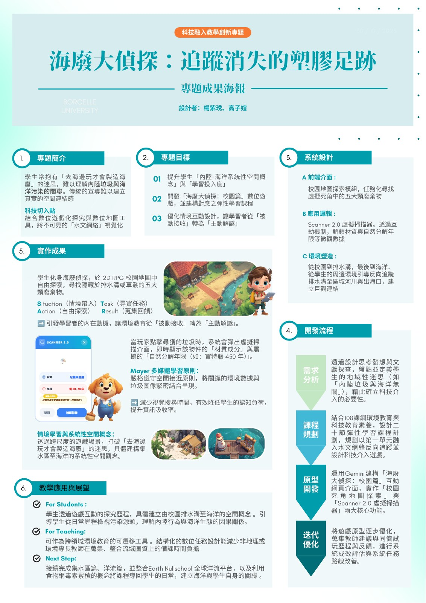
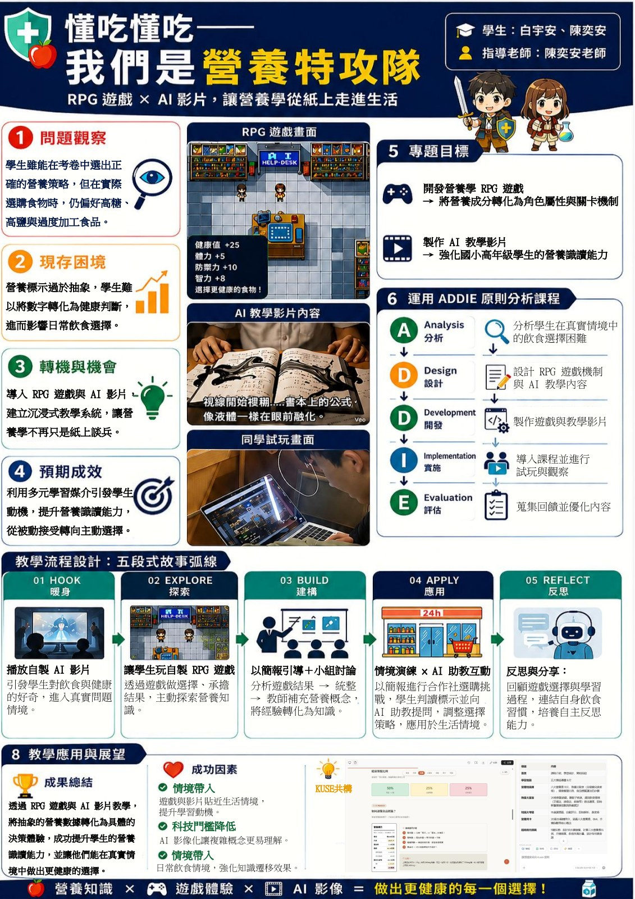
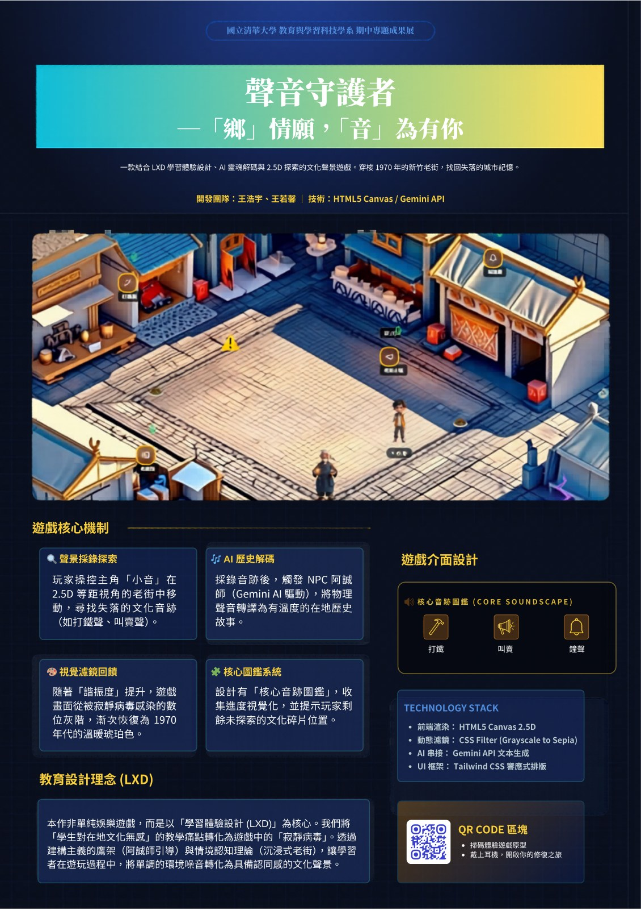
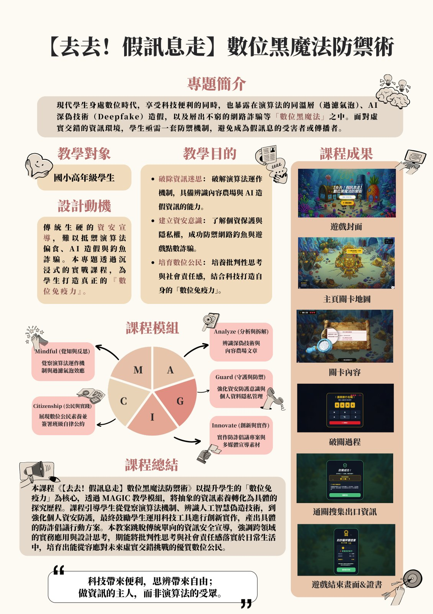
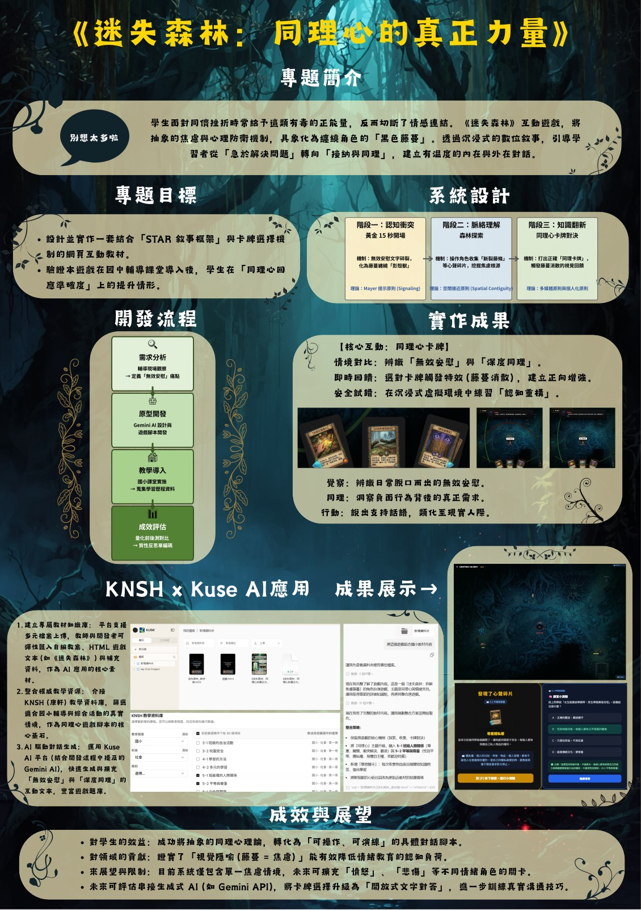

第01組
海廢大偵探：追蹤消失的塑膠足跡
The Marine Debris Detective
以 2D RPG 校園地圖出發，讓學生在遊戲中追蹤排入海洋的五大類廢棄物；結合 Scanner 2.0 虛擬辨識互動，把看不見的水文網絡視覺化，將「被動學習」轉化為「主動解謎」。
當教室遇上遊戲，當課本遇上人工智慧，學習會長成什麼模樣？本次成果展集結教育與學習科技學系五組學生的期中專題：他們以遊戲化設計與生成式 AI 為工具，把抽象的知識，轉化為一場場可以親手操作、用心體會的旅程。
「讓學習不再是被動的接收，
而是一次次主動的探索。」
從海洋廢棄物到營養均衡，從失落的聲音地景到數位時代的思辨，再到對他人的同理與陪伴——五組專題各自回應一個真實的教學現場難題，並以「寓教於遊」為共同信念，邀請學習者在遊戲中提問、在互動中成長。
這方展廳收錄了五份海報專題，以及展出當日的現場紀實。願你放慢腳步，細看每一個被認真設計過的學習瞬間。
第一展區 · The Projects
Five Projects in Game-Based Learning

The Marine Debris Detective
以 2D RPG 校園地圖出發，讓學生在遊戲中追蹤排入海洋的五大類廢棄物；結合 Scanner 2.0 虛擬辨識互動，把看不見的水文網絡視覺化，將「被動學習」轉化為「主動解謎」。

The Nutrition Squad
以 RPG 遊戲與 AI 教學影片，依 ADDIE 模式打造五段式故事弧線（Hook→Explore→Build→Apply→Reflect），讓營養學從紙上走進生活，培養學生的營養辨讀與決策能力。

Guardians of Sound
一款 2.5D 聲音採集遊戲，玩家操控「小音」在失落的文化村落中錄音、解謎；以 Gemini API 將聲音轉譯為有溫度的地方故事，重建 1970 年代的城市記憶，以學習體驗設計（LXD）為核心。

Defense Against the Digital Dark Arts
面對演算法同溫層、AI 深偽與假訊息，以沉浸式實戰課程打造學生的「數位免疫力」。透過 MAGIC 教學模組（Mindful／Analyze／Guard／Innovate／Citizenship），培養批判思辨與資安意識。

The Lost Forest · The Power of Empathy
一款以「同理心」為核心的敘事互動遊戲，運用 STAR 敘事框架與卡牌選擇機制，結合 KNSH × Kuse AI；引導學生從「急於解決問題」轉向「接納與陪伴」，在虛擬情境中練習換位思考。
第三展區 · Documentation
六十五幀 · 沿牆而行，閱覽展出當日現場